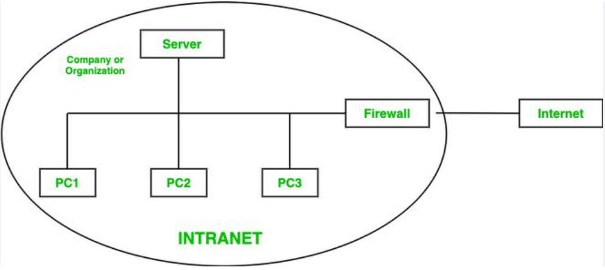

An intranet is a private network that uses Internet technologies (such as TCP/IP, HTTP, and web browsers) but is accessible only to authorised members of an organisation — typically its employees. It functions like a small, internal version of the Internet, designed to facilitate communication, information sharing, and collaboration within a single organisation. Intranets commonly host internal tools such as employee directories, HR portals, document management systems, company news boards, wikis, and collaboration platforms. Access is protected by firewalls, VPNs, and authentication systems to prevent unauthorised external access. Many large corporations rely on intranets to manage internal workflows efficiently.
Key features of an intranet include: